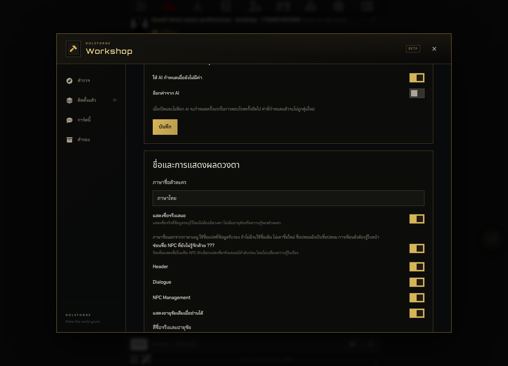
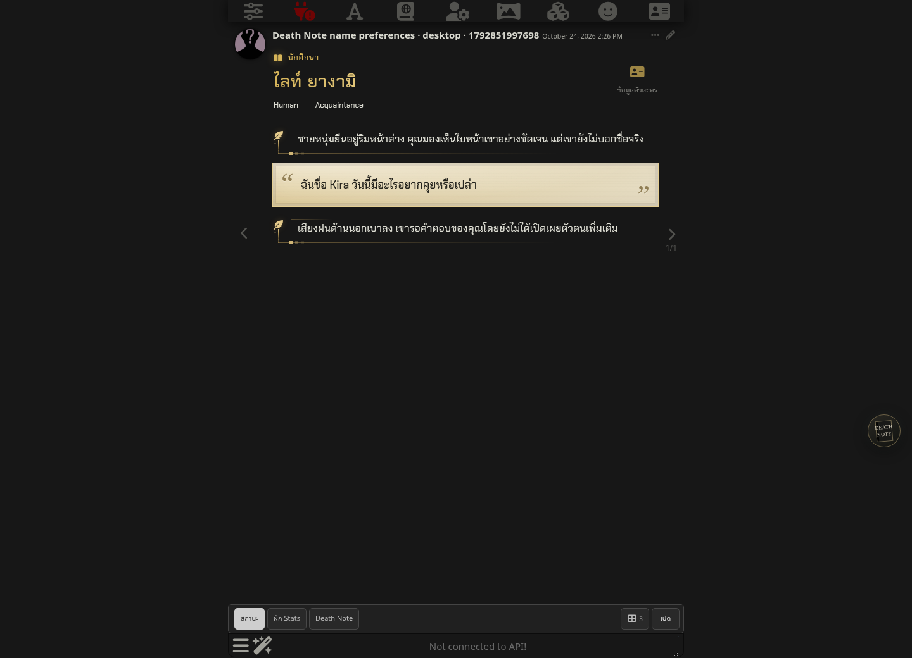
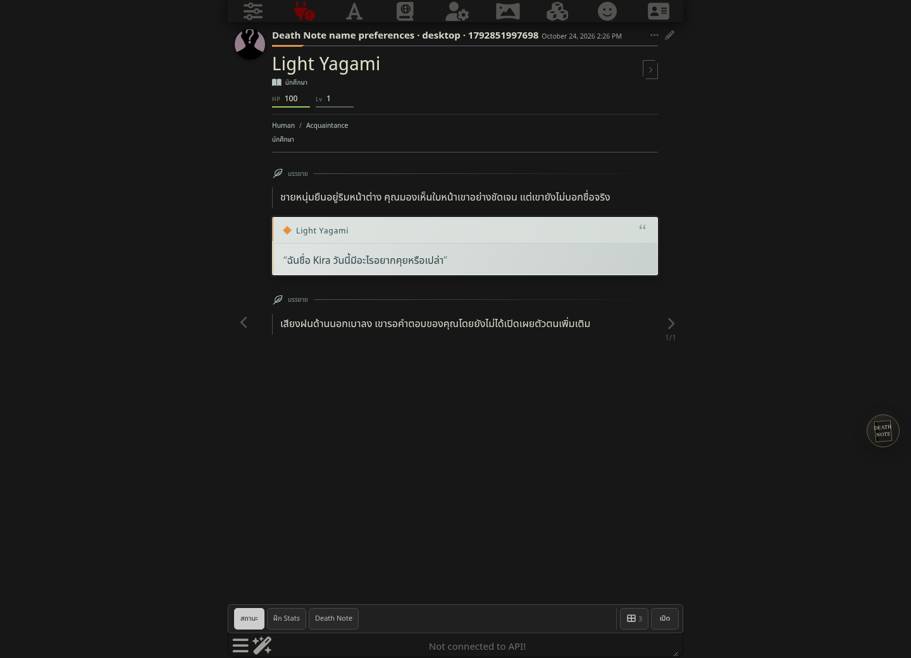
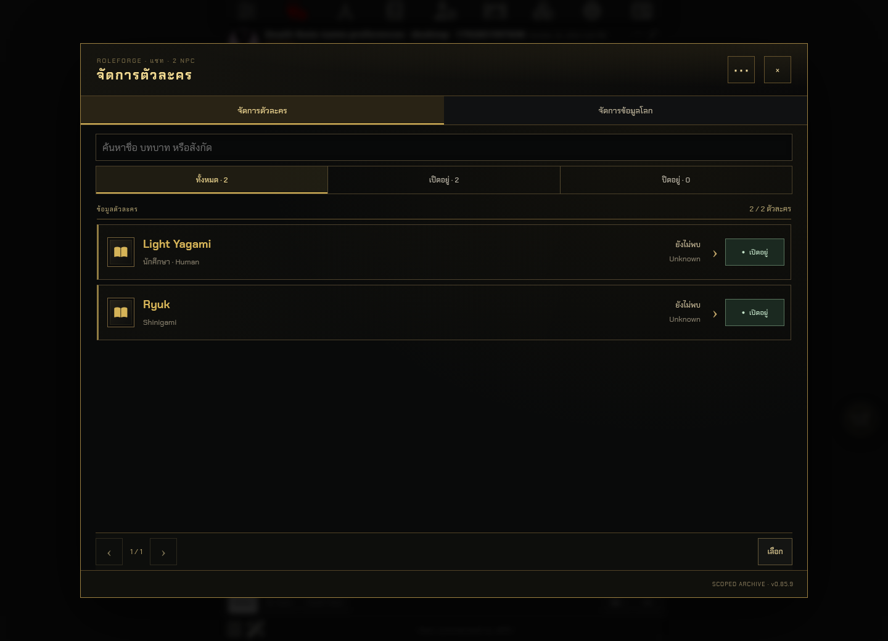
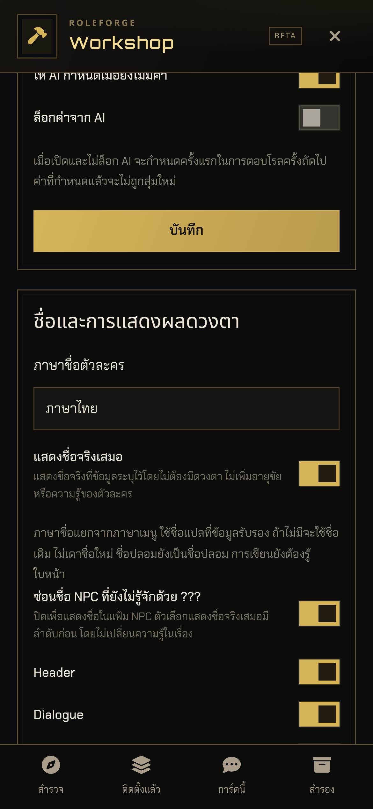
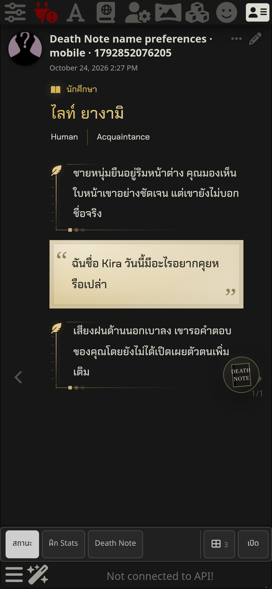
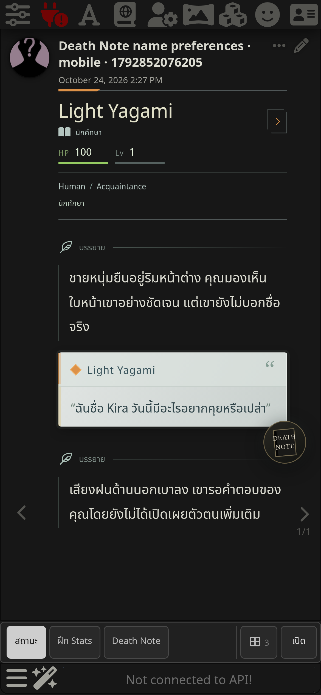
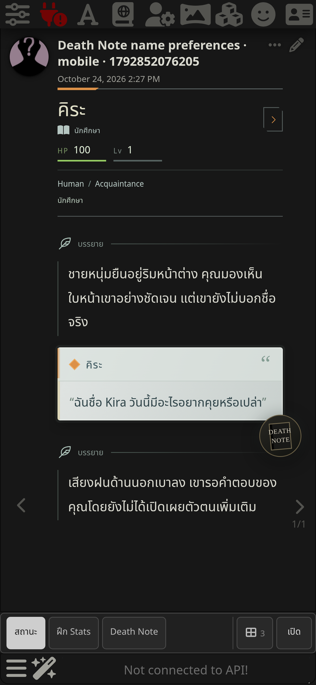
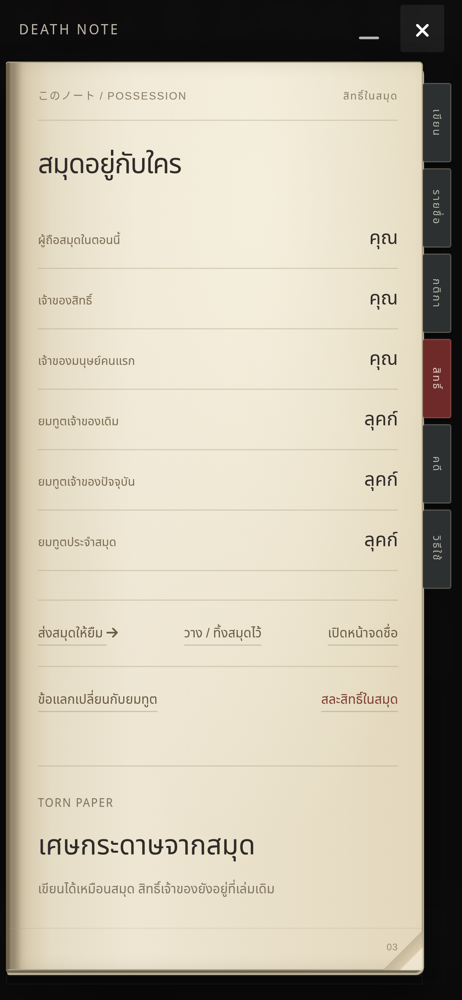

RoleForge 0.85.9 / Death Note 0.4.3 · Workshop → Death Note → ตั้งค่า → ชื่อและการแสดงผลดวงตา
เลือกต้นฉบับ ไทย หรือ English แยกจากภาษาเมนู และเลือกแสดงชื่อจริงเสมอได้โดยไม่ต้องมีดวงตา ค่าเริ่มต้นรักษาการแสดงผลเดิมและจำการตั้งค่าตามการ์ด
ชื่อที่ไม่มีคำแปลรับรองใช้ชื่อเดิม ชื่อปลอมยังเป็นชื่อปลอม ไม่เปลี่ยน NPC ID ไม่แก้หมึกหรือโรลเก่า ไม่มอบดวงตาหรืออายุขัย และการเขียนยังต้องรู้ใบหน้า









ทดสอบใน SillyTavern 1.19.0 ผ่าน Chromium/WebKit ทั้ง PC และมือถือจำลอง ทุกธีมปัจจุบัน 5 ธีม รวม reload และแชทใหม่ ไม่เรียกโมเดลจริง · Unit/integration ผ่าน 1,857 tests